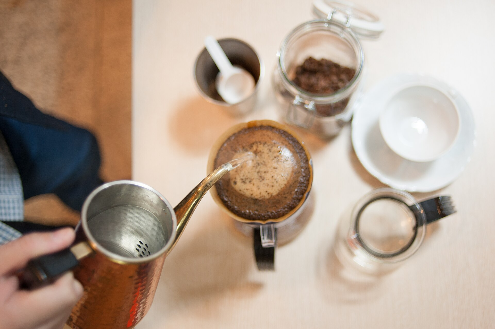

The morning pour
At eight we grind the first filter batch. By ten the hand brewer is out for anyone who wants a single cup.

At eight we grind the first filter batch. By ten the hand brewer is out for anyone who wants a single cup.
